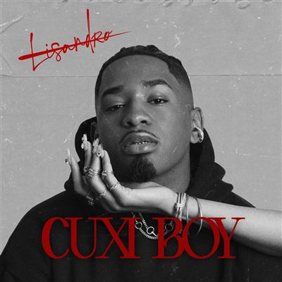

<!DOCTYPE html>
<html lang="fr">
<head>
    <meta charset="UTF-8">
    <meta name="viewport" content="width=device-width, initial-scale=1.0">
    <title>Cuxi-Boy</title>
    <link rel="stylesheet" href="style.css">
</head>
<body>
    
</body>
</html>


<h1>CUXI BOY</h1>

<h2>Lisandro Cuxi</h2>

<p>Après avoir conquis le public en remportant The Voice en 2017, et marqué son retour avec le tube Karma, Lisandro Cuxi s'apprête à devoiler son tout premier album personnel, « Cuxi Boy » le 14 février 2025. Véritable tournant dans sa carrière, ce projet mêle une évolution artistique audacieuse et une affirmation personnelle profonde et sincère. Accompagné des artistes de renom Franglish, Joé Dwèt Filé, Merveille et Monsieur Nov, ce projet de 14 titres explore avec intensité les facettes de l’amour : la séduction, les relations toxiques, les ruptures… Chaque morceau est une immersion dans son univers intime, oscillant entre vulnérabilité touchante et confiance affirmée. Cette dualité mise en lumière et en musique dans « Cuxi Boy », est une fusion envoûtante de RnB et d'Afrobeats, aux sonorités Capverdiennes qui rendent hommage à ses racines. Lisandro présente un album authentique, à la fois personnel, puissant et universel</p>

<ol>
    <li>Not A Perfect Boy</li>
    <li>Priorite</li>
    <li>Sereia</li>
    <li>Hotklima</li>
    <li>D S L</li>
    <li>B B M</li>
    <li>Juicy</li>
    <li>2 3 8</li>
    <li>Mami</li>
    <li>Honeyspecial</li>
    <li>O L Y</li>
    <li>Reviens</li>
    <li>V M V</li>
</ol>
